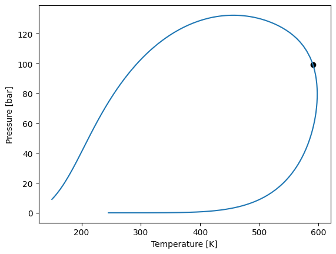

Gerg2008
In yaeos the multifluid equation \(GERG2008\) residual term is implemented.
[1]:
import yaeos
import numpy as np
import matplotlib.pyplot as plt
The GERG2008 object is instantiated by providing a list of the components desired to include. The available components are:
methanenitrogencarbon dioxideethanepropanen-butaneisobutanen-pentaneisopentanen-hexanen-heptanen-octanenonanedecanehydrogenoxygencarbon monoxidewaterhydrogen sulfideheliumargon
For example, we will calculate the phase envelope for the ternary system of methane, n-butane and decane.
[2]:
# Define the model to use
model = yaeos.GERG2008(["methane", "n-butane", "decane"])
# Make a flash calculation at
z = [0.4, 0.2, 0.4]
model.phase_envelope_pt(z, kind="bubble", max_points=500).plot()
